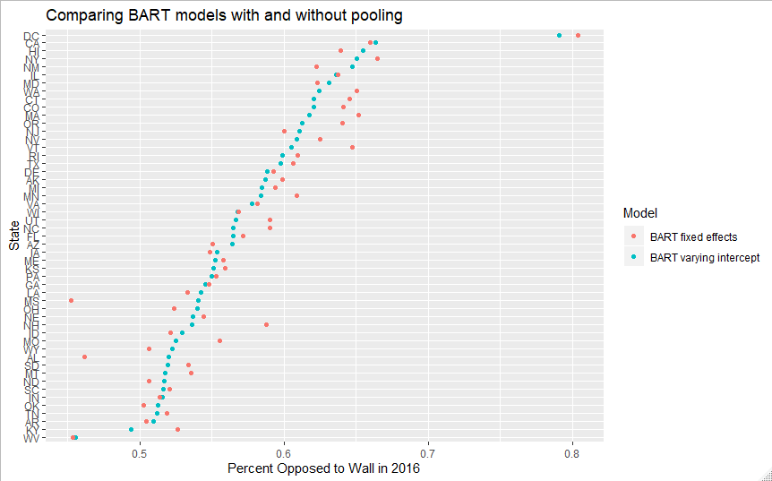
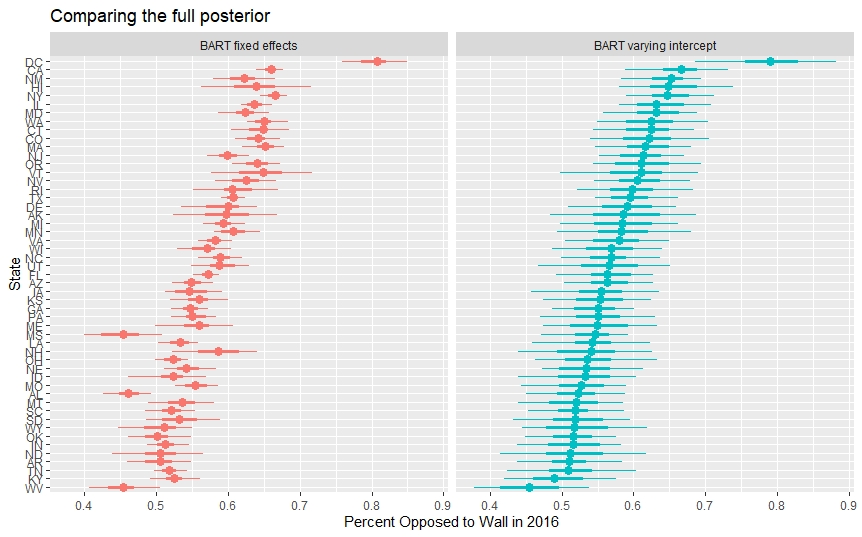

This is the first of a few posts about some of the substantive and modeling findings from my master’s thesis, where I use Bayesian Additive Regression Trees (BART) and Poststratification to model support for a border wall from 2015-2019. In this post I explore some of the properties of using BART with varying intercepts (BART-vi) within the MRP framework.
Choosing a prediction model for MRP
Multilevel Regression and Poststratification has seen huge success as a tool for obtaining accurate estimates of public opinion in small areas using national surveys. As the name would suggest, the most common tool used for the modeling step of these models are multilevel regressions, often Bayesian multilevel ones. The key intuition here is that pooling data across levels of predictors like state makes much more efficient use of the underlying data, which leads to more accurate estimates. However, there is no strict requirement that the models used here be multilevel regressions, it’s simply an efficient and stable way to get regularized predictions using quite a large set of predictors. Recently, academic work has begun to explore using a wide class of machine learning algorithms as the predictive component in this framework. Andrew Gelman calls this RRP: Regularized Regression and Poststratification.
One particularly promising alternative prediction algorithm is BART, which puts the high accuracy of tree-based algorithms like random forests or gradient boosting into a Bayesian framework. This has a number of appealing advantages compared to other machine learning options, especially for RRP. First, unlike other algorithms which might not have clear measures of their uncertainty or confidence intervals around their predictions, BART approximates a full posterior distribution. Second, BART has a number of prior and hyperparameter choices that have been shown to be highly effective in a wide variety of settings, somewhat reducing the need for parameter search. Finally, BART runs fast, especially when compared to the Bayesian multilevel models commonly used for MRP.
Of course, BART models are not without their disadvantages. First and foremost, there is currently only a small amount of recent work on BART models for categorical (as opposed to binary) response (Murray, 2019), and no public implementation of that model that I am aware of. In my case, this means modeling the border wall question as binary “support vs. oppose”, as opposed to the three categories “support, oppose, don’t know”. Given the salience of the issue, only 3.1% of people responded “Don’t Know”, so this is a relatively minor loss. However, for questions like the formerly crowded 2020 democratic primary, or a general election where third parties play a major role, this could be a much more serious loss.
While only a small amount of work has compared the two so far, estimates using BART appear to slightly outperform those using multilevel models. For example, Montgomery & Olivella (2018) compared using BART to Gelman & Ghitza’s (2013)’s fairly complex multilevel model, finding the predictions were incredibly similar, being as much as .97 correlated. As they note however, their BART model produced these results both without large amounts of iteration on model form (which has been a constant challenge for MRP), and producing such estimates orders of magnitude faster. Similarly, Bisbee (2019) finds across 89 different datasets that BART and MRP produced very similar estimates, but BART’s were of slightly higher quality, both by Mean Absolute Error (MAE) and Interstate Correlation (a measure of how well the state level predictions from a model using national surveys line up with state level polls). Ending his article, Bisbee writes “One avenue of future research might focus on variants of Bayesian additive regression trees that embed a multilevel component, likely providing further improvements as the best of both worlds.”
This is exactly what I do in my thesis, using BART with varying intercepts by state to model support for a border wall by state. To present my findings around BART-vi, I’ll start by providing a brief overview of the MRP framework. Next, I’ll explain BART, and how BART-vi extends this model. Finally, I’ll build one model of each BART type, and compare them.
A Quick Review of Multilevel Regression and Poststratification
While I’m mostly focused on the modeling step with this post, here’s a quick review of the overall process in building a MRP/RRP model. If you want a more complete introduction, Kastellec’s MRP Primer is a great starting point.
MRP or RRP cast estimation of a population quantity of interest \theta as a prediction problem. That is, instead of the more traditional approach of attempting to design the initial survey to be representative of the population, MRP leans more heavily on modeling and poststratification to make the estimates representative.
To sketch out the steps-
- Either gather or run a survey or collection of surveys that collect both information on the outcome of interest, y, and a set of demographic and geographic predictors, \left(X_{1}, X_{2}, X_{3}, \ldots, X_{m}\right).
- Build a poststratification table, with population counts or estimated population counts N_{j} for each possible combination of the features gathered above. Each possible combination j is called a cell, one of J possible cells. For example, if we poststratified only on state, there would be J=51 (with DC) total cells; in practice, J is often several thousand.
- Build a model, usually a Bayesian multilevel regression, to predict y using the demographic characteristic from the survey or set of surveys, estimating model parameters along the way.
- Estimate y for each cell in the poststratification table, using the model built on the sample.
- Aggregate the cells to the population of interest, weighting by the N_{j}’s to obtain population level estimates: \theta_{\mathrm{POP}}=\frac{\sum_{j \in J} N_{j} \theta_{j}}{\sum_{j \in J} N_{J}}
BART
In this section, I review the general BART model, and discuss the hyperparameter choices I use. Proposed by Chipman et al, (2008), BART is a Bayesian machine learning algorithm that has seen widespread success in a wide variety of both predictive and causal inference applications. Like most machine learning models, it treats the prediction task as modeling the outcome y as an unknown function f of the k predictors y = f(X_{k}).
BART does with this a sum of decision trees:
Y_{k}=\sum_{j=1}^{m} g\left(\mathbf{X}_{k}, T_{j}, \mathbf{M}_{j}\right)+\epsilon_{k} \quad \epsilon_{k} \stackrel{i . i . d}{\sim} N\left(0, \sigma^{2}\right)
(To start with the continuous case, before generalizing to the binary case in a moment)
Each tree T_j splits the data along a variety of predictors, seeking to improve the purity of outcomes in each group. For instance, in seeking to partition respondents into purer groups of support or opposition for a border wall, one natural split is that of white vs. nonwhite respondents, after which a further split by education might further partition the white node. At the end of fitting such a tree, there are b_{j} terminal nodes (nodes at the bottom of the tree), which contain groups where the average outcome \mu_{j} should be purer due to iterative splitting. This iterative splitting is equivalent to the modeling of interaction effects, and combining many such trees allows for flexible and highly non-linear functions of the predictors to be calculated. Each data point x is thought of as assigned to one such terminal node for each tree, which captures E(y \vert x), with the collection of u_{j}’s referred to collectively as M. Together, m such trees are fit to residual errors from an initial baseline prediction iteratively, ensuring that the trees are grown in varying structures that predict well for different parts of the covariate space, not just split on the same features producing identical predictions.
To fit such trees to the data and not overfit, BART utilizes a Bayesian framework, placing priors on tree structure, terminal node parameters, and variance, \sigma^2. The prior for the u_{j} and \sigma^2 are:
\begin{aligned} \mu_{j} | T_{j} & \sim N\left(\mu, \sigma_{\mu}^{2}\right) \\ \sigma^{2} & \sim I G\left(\frac{\nu}{2}, \frac{\nu \lambda}{2}\right) \end{aligned}
Where I G(\alpha, \beta) is the inverse gamma distribution with shape parameter \alpha and rate \beta. The priors on the tree structure can be thought of as having 3 components. First, there is a prior on the probability that a tree of depth d = 0,1,2... is not terminal, which is \alpha(1+d)^{-\beta}, with \alpha \in(0,1) \text { and } \beta \in[0, \infty). This \alpha controls how likely a terminal node is to be split, with smaller values indicating a lower likelihood of split, and \beta controls the number of terminal nodes, larger \beta implying more nodes. The second prior on the trees is on the distribution used to choose which covariate is split on. The final prior on the trees is on the value of the chosen splitting covariate at which to split. For both these later parameters, a common choice (and the one dbarts makes) is a simple discrete uniform distribution.
This set of priors also requires choosing the m, \alpha, \beta, \mu_{\mu}, \sigma, \nu and \lambda hyperparameters, which can be chosen via cross-validation or simply set to defaults. In general, the past literature on BART finds that the defaults developed by Mculloch work quite well in a surprisingly large number of contexts (Tan, 2018). More specifically in the MRP context, both Montgomery & Olivella (2018) and Bisbee (2019) found little reason to utilize non-default hyperparameter choices after reasonable search. For completeness, however, I ran a small number of hyperparameter searches on my complete records data, as recommended by the author of the dbarts package. Similar to prior work, I found little reason to diverge from the defaults suggested by Chipman et al, and implemented in dbarts, although I did ultimately go with m = 200 trees as Chipman et al. suggest, not the m = 75 default in dbarts. For a full derivation of these choices and their resultant properties, see Chipman et al. (2008) or (Tan, 2018).
A final modification of this formulation of BART is needed for binary outcomes. For binary outcomes, BART uses the probit link function to model the relationship between X and y:
P\left(Y_{k}=1 | \mathbf{X}_{k}\right)=\Phi\left[G\left(\mathbf{X}_{k}\right)\right]
where \Phi[.] is the cumulative distribution function of a standard normal distribution, and G is the full BART model we saw earlier. This slightly modifies steps for drawing from the posterior distribution, as discussed further in Chipman et al. (2008).
BART-vi
To the best of my knowledge, no prior work has utilized BART with varying intercepts (BART-vi) in the MRP framework. Given the huge amount of prior work on MRP that leverages a large set of varying intercepts, this seems like a natural extension. This modifies the BART predictor for binary outcomes to
P\left(Y_{k}=1 | \mathbf{X}_{k}\right)=\Phi\left[G\left(\mathbf{X}_{k}\right) + \alpha_{k}\right]
with a_{k} \sim N\left(0, \tau^{2}\right). Critically, this also removes the varying intercept variable from the choice of possible features to split on, modeling it purely as a varying intercept. Given that the dbarts package which I use currently only supports 1 varying intercept, the natural choice is the state variable, as it both has the most categories and is one of the original motivations for varying intercepts in MRP work. All the old priors and hyperparameters remain the same, and dbarts places an additional cauchy prior on \tau^{2}. While this cauchy prior is much less informative than the half-t, half-normal, or other priors typically used for MRP, at this time it is not possible to modify the prior choice except to a gamma distribution which is also not ideal. Future work could consider fitting this type of model with the more informative priors favored by the MRP literature for random effects, although such an improvement would require a time investment in learning to modify the c++ codebase of dbarts.
Comparing the predictions of the two
I provide two forms of evaluation for BART-vi vs regular BART, a quantitative assessment based on 10-fold cross validation, and a graphical/qualitative comparison of state level estimates resulting from the two.
To test the performance of this modification, I fit BART with and without varying intercept on state to the same m = 50 imputed1 datasets, using 10-fold cross validation within each dataset. Overall, while both models are extremely accurate, the BART-vi model slightly outperforms the regular BART model without varying intercepts in terms of RMSE, MSE, and AUC on average. Of course, given that this is a test of predictive accuracy before the final poststratification, this isn’t a full validation of BART-vi’s predictive superiority in the MRP context. However, this is consistent with (Tan, 2018)’s result in a more extensive set of simulation studies that there are small gains in accuracy to be had with BART-vi when random effects are used with an appropriate grouping variable. To make such a comparison completely rigorously, one would need to fit both types of models on a dataset with a ground truth such as vote share, poststratify, and then contrast their properties relative to that ground truth, not simply compare predictive accuracy on the initial set of surveys. However, as this is not possible for the border wall question, I take this as a rough suggestion that BART-vi may preform better in my context, and possibly in others.
Plotting a comparison of the state-level median prediction from the two models after poststratification shows a familiar pattern of pooling. The BART-vi estimates are pulled somewhat towards the grand mean, whereas the ones without varying intercepts are a bit more spread out. Note, however, that we don’t see the sort of idealized pooling trend often shown in textbook examples of multilevel models, with non-multilevel predictions that are uniformly higher above the grand mean and uniformly lower below it compared to the multilevel predictions. This is due to the simple BART model modeling much more complex interactions based on the state variables than a single level regression.

One particularly interesting qualitative example to illustrate the differences between the models is that of DC, which is both a small state, and an incredibly liberal one. This presents a dilemma from the perspective of varying intercepts pooling: on the one hand, with only 94 observations in the full data, we should want some pooling on DC’s estimate. On the other, DC genuinely is exceptionally liberal, which suggests that pooling it too much could hurt predictive performance. While both already somewhat regularize the 13% raw approval for the wall in our aggregated polls, BART-vi does so much more. Thus, while the average predictions are of higher quality with BART-vi, the DC and other extreme state predictions are superior without random effects. Most prior MRP work has been happy to make this sort of trade off, and based on the rough accuracy comparisons I’ve made, this appears to work well for my data and my BART model as well.
Comparing the full posterior distributions of the two models below, we can also see BART-vi has noticably wider 50 and 90% intervals as well (the dot indicates the median, the thick bar is the 50% interval, and the thinnest bar is the 90% one). Like with my CV testing, a complete sense of which level of uncertainty provided here is appropriate will have to wait for future MRP work that leverages data with a ground truth. However, in many cases, the fixed effects intervals border on what I’d call concerningly small- I wouldn’t be suprised if the coverage properties of the BART-vi intervals are better.

Next steps
Given that my work shows BART-vi having some desirable properties for RRP, what might be some extensions to explore next?
A first obvious step might be explore this type of model on data where we do have a ground truth like voter turnout, or vote share. For a more extensive comparison, one could leverage Bisbee (2019)’s replication data, which would hopefully provide a more complete answer to whether this strategy works well in general.
Probably the most theoretically interesting question would be how to handle the possibility of multiple random intercepts, if dbarts or another package eventually implements them. This represents a tradeoff between the benefits of flexible Bayesian non-parametrics in BART, and the pooling behavior of varying intercepts. Initially, I thought it was entirely feasible that the BART-vi I fit would have worse predictive accuracy, given the potential benefits of splitting on state. However, given that I utilize both 2012 vote share and region as predictors, it seems that the model still had ample state level information. However, as we pooled across more variables, this would increasingly weaken the non-parametric component of the BART-vi model. In this scenario, would pooling across demographic predictors that have many fewer categories make sense? While future work will have to tell, my guess is that the answer might be that only state or other geographic variables benefit from pooling.
1: Given my data had a relatively large proportion of respondents who refused to answer at least 1 demographic question (10.54%), I also explored imputing the missing characteristics using a variety of different approaches. The full details of that are coming in another post, but I ran 10-fold CV on the imputations so that the evaluation would more fully mirror my final modeling scenario.
Reuse
Citation
@online{timm2019,
author = {Andy Timm},
editor = {},
title = {BART with Varying Intercepts in the {MRP} Framework},
date = {2019-07-03},
url = {https://andytimm.github.io/2020-03-06-BART-vi.html},
langid = {en}
}